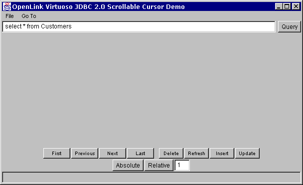
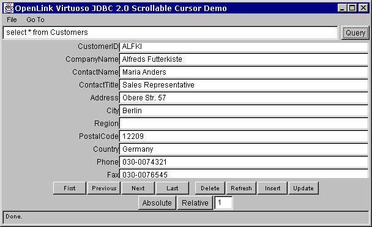

This is a demonstration of an applet using the OpenLink Virtuoso JDBC Driver with the JDBC Scrollable Cursor specification.
When the Web browser has finished loading the Java applet, a window containing the JDBC applet will appear:

When it is running, click on the "Query" button to execute a SQL query against the default connection URL. If successful, you should see the first row of the resultset filling the applet window:

Click on the "Next" button to retrieve the next row, "Previous" to go back a row, "First" to move directly to the first row, and "Last" to move to the last row.
Clicking "Delete" will attempt to delete the row from the database. Clicking on "Refresh" will now retrieve the latest values from the database to refresh the row. However this may or may not be successful dependent on the restrictions place on the resultset by the underlying database.
"Insert" will attempt to add the contents of the current row as a new row to the relevant tables forming the resultset. "Update" will attempt to update the modified contents of current row to the database. Again, the success of these two operations depends on the restrictions placed on the underlying database.
To move to a particular absolute position in the resultset, enter that position into the edit box, and press the "Absolute" button. You may move a relative number of rows from the current position by entering the offset as a positive or negative number, then press "Relative" button.
To change the connection URL, select "File|Set Connection URL.." from the menu. A dialog box will appear enabling you to change JDBC driver used, and the connection URL:
Please note that due to the applet security restrictions, it is only possible to connect to the same server IP as the Web server.
The Java source for this applet